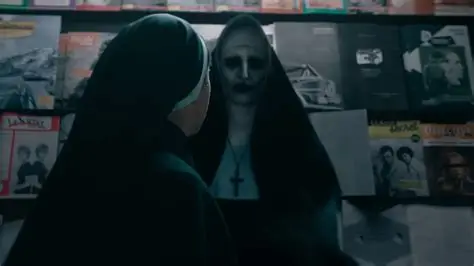
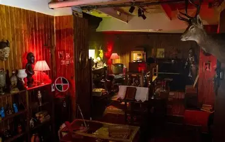

LUGAR N.º 001
La casa de la familia Perron
En la película El Conjuro, una familia llega a una casa donde comienza a experimentar sucesos extraños.
Tipo: Casa residencial ficticiamente representada
Archivos confidenciales de fenómenos paranormales
ZONAS BAJO INVESTIGACIÓN
En las películas de terror, algunos lugares se convierten en el centro de historias inexplicables. Explora estos escenarios del universo cinematográfico de Expedientes Warren.
LUGAR N.º 001
En la película El Conjuro, una familia llega a una casa donde comienza a experimentar sucesos extraños.
Tipo: Casa residencial ficticiamente representada

LUGAR N.º 002
Una abadía aislada sirve como escenario para una historia de misterio relacionada con una presencia sobrenatural.
Tipo: Escenario cinematográfico

LUGAR N.º 003
En las películas, Ed y Lorraine Warren conservan objetos relacionados con sus investigaciones en una habitación especial.
Tipo: Lugar representado en las películas